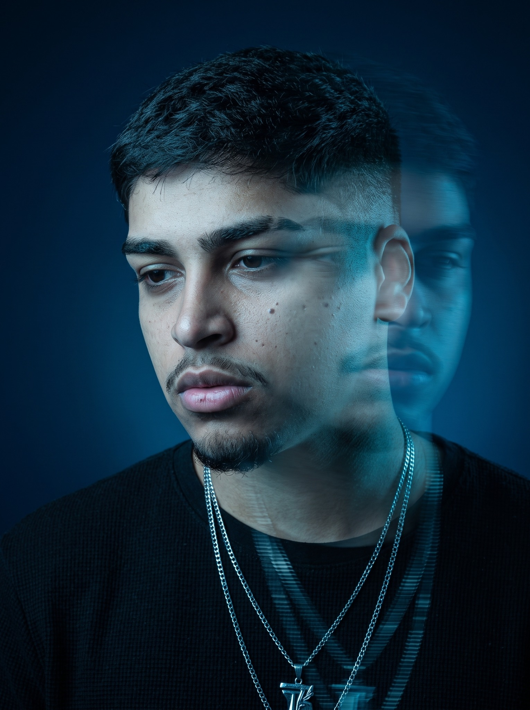

REELS / CREATOR
Intercâmbio na Austrália
Bianca Vilaplana · Edição dinâmica · Legendas

@vdr_byeditorEDIÇÃO PARA CONTEÚDO DIGITAL
Você envia seu material bruto e eu te mostro como o seu vídeo pode prender do primeiro ao último segundo.
DO BRUTO À ENTREGA FINAL
TRABALHOS SELECIONADOS
Cada projeto mostra o tipo de conteúdo, o que foi feito e a duração. Toque em uma capa para assistir.
Bianca Vilaplana · Edição dinâmica · Legendas
Fernando Ramalho · Edição educativa · Elementos gráficos
Produto · Motion · Sound design
Vídeo autoral · Motion · Sound design
Frames escolhidos dos próprios vídeos · toque para assistir sem sair do site.
O MÉTODO POR TRÁS DO RESULTADO
Organizo cada ideia para a mensagem ser entendida sem esforço.
Cortes, pausas e mudanças visuais usados para manter a atenção.
Motion, legendas e sound design com intenção, sem excesso.
MINHA ILHA DE EDIÇÃO
Montagem · Cor · Som · Entrega
Motion · Composição · Animação
QUEM ESTÁ POR TRÁS
Editor de vídeo
A edição faz parte da minha história desde cedo. Comecei ainda jovem, movido pela curiosidade de transformar imagens, música e ideias em algo capaz de prender atenção.
Passei anos no mundo corporativo e cheguei a atuar como líder em uma grande empresa. Essa experiência trouxe maturidade, responsabilidade e visão profissional. Mas o que realmente fazia sentido para mim sempre esteve na criação. Na edição.
SERVIÇOS
Reels · TikTok · Shorts
↗Animações · Legendas · Identidade
↗Creators · Experts · Negócios
↗TEM UM PROJETO EM MENTE?
Conte-me sobre seu conteúdo e vamos descobrir como elevar seus próximos vídeos.